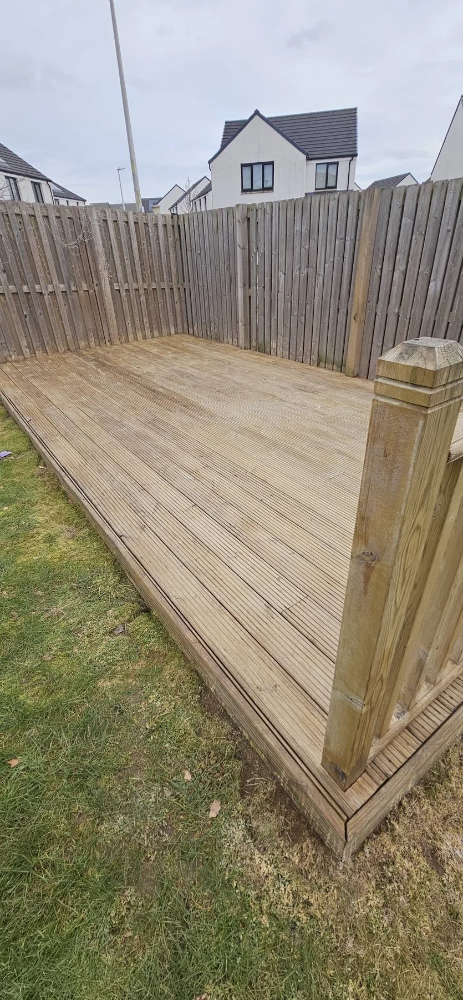

PRECISION FENCING · DUNDEE
A little more privacy.
A lot more garden.
Fencing and decking in Dundee, Perth and surrounding areas. Over a decade of experience, with free estimates for your next project.
ROOM TO ENJOY
Your space.
With a better finish.
From a new timber boundary to a deck for summer evenings, Precision Fencing helps you get more from your garden. Based in Dundee, we bring over a decade of fencing and decking experience to projects across the surrounding area.
Request a free estimate →
BUILT AROUND YOUR HOME
From the side path
to the back garden.
A practical boundary. A place to relax. Explore our timber fencing and decking work in the project gallery.
Take a closer look →

OUR PROJECTS
Fencing, decking and the finishing details.
Our supplied project photographs. Select an image to see it in full.
BEFORE WE BEGIN
Good to know.
Where do you work?
We are based in Dundee and cover Dundee, Perth and Kinross, Fife and Angus. Send your postcode to confirm availability for your project.
Are estimates free?
Yes. Get in touch for a free estimate for your fencing or decking project.
Can you help with storm damage?
Yes. Contact us about damaged fencing and replacement work. Photographs and approximate measurements help us understand what is needed.
How much experience do you have?
We have over a decade of experience in fencing and decking.
Can I enquire about composite fencing?
Yes. We offer timber and composite fencing, as well as garden decking and decorative or security fencing. Tell us your preferred style when you get in touch.
FREE ESTIMATES
Your garden.
Let’s make a plan.
Send us your location, approximate measurements and a few details about the work. You can attach photos in WhatsApp before sending.
precisionfencingdundee@gmail.com
The form prepares a WhatsApp draft for you to review and send.